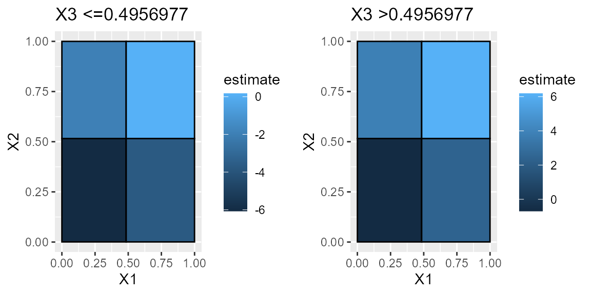

Tutorial: Beginner
Brian Quistorff
2021-02-04
Source:vignettes/tutorial_beginner.Rmd
tutorial_beginner.Rmd
library(CausalGrid)
library(gridExtra)Some common parameters
set.seed(1337)
N = 1000
K = 3
err_sd = 1Simple Example
Let’s get some fake data
X = matrix(runif(N*K), ncol=K) #Features for splitting partition
d = rbinom(N, 1, 0.5) #treatment assignment
tau = as.integer(X[,1]>.5)*2-1 #true treatment effect (just heterogeneous across X1)
y = d*tau + rnorm(N, 0, err_sd) #outcome
est_part0 = fit_estimate_partition(y, X, d, cv_folds=2)
get_desc_df(est_part0)
#> X1 N_est param_ests pval
#> 1 <=0.5050542 261 -0.7767593 3.681519e-09
#> 2 >0.5050542 239 0.8697289 3.792252e-11We typically want a high-level partition for “human” consumption. To save time, avoid cells with too few observations, and reduce the chance of splitting from running many noisy tests, it’s common to only look for a few splits per dimension. If we don’t specify this, the function will try every possible split across each dimension.
# With just a scalar, we will split at points equal across the quantile-distribution for each feature.
breaks = 5
#Otherwise we can explicitly list the potential splits to evaluate.
breaks = rep(list(seq(breaks)/(breaks+1)), K)
est_part = fit_estimate_partition(y, X, d, breaks_per_dim=breaks, cv_folds=2)
plot(est_part)
get_desc_df(est_part)
#> X1 N_est param_ests pval
#> 1 <=0.5 255 -0.9035292 3.379837e-12
#> 2 >0.5 245 0.9557823 2.823001e-12We can manually estimate this simple model given the partition
est_df = data.frame(y=y, d=d, f=predict(est_part$partition, X))
summary(lm(y~0+f+d:f, data=est_df[-est_part$index_tr,]))
#>
#> Call:
#> lm(formula = y ~ 0 + f + d:f, data = est_df[-est_part$index_tr,
#> ])
#>
#> Residuals:
#> Min 1Q Median 3Q Max
#> -3.1360 -0.6908 -0.0019 0.7014 2.6253
#>
#> Coefficients:
#> Estimate Std. Error t value Pr(>|t|)
#> f(-1,0.5].(-0.999,2].(-1,2] -0.09209 0.08434 -1.092 0.275
#> f(0.5,2].(-0.999,2].(-1,2] 0.05627 0.08786 0.640 0.522
#> f(-1,0.5].(-0.999,2].(-1,2]:d -0.90353 0.12559 -7.194 2.33e-12 ***
#> f(0.5,2].(-0.999,2].(-1,2]:d 0.95578 0.12769 7.485 3.28e-13 ***
#> ---
#> Signif. codes: 0 '***' 0.001 '**' 0.01 '*' 0.05 '.' 0.1 ' ' 1
#>
#> Residual standard error: 0.9979 on 496 degrees of freedom
#> Multiple R-squared: 0.3218, Adjusted R-squared: 0.3164
#> F-statistic: 58.85 on 4 and 496 DF, p-value: < 2.2e-16Sometimes we want a different level of complexity than that picked by CV. Either we can pre-specify which partition in the sequence that we want (using the partition_i parameter), or we can look at the sequence of objective function values and see where additional splits only provide marginal improvements.
print(paste("In-sample Objective function values: ", paste(est_part$is_obj_val_seq, collapse=" ")))
#> [1] "In-sample Objective function values: -0.00130792756957961 -0.860071145786862 -0.906298192191155 -0.974137597678458 -1.01692472825141 -1.05861007636975 -1.1137648149499 -1.16690858898675 -1.22036187891834 -1.23615779557238"Compare this with the average treatment effect for the whole and estimation-only samples
est_part$full_stat_df
#> sample N_est param_ests var_ests tstats ci_u ci_l
#> N_tr all 1000 0.03338318 0.005710407 0.4417680 0.1816721 -0.1149057
#> N_es est 500 0.03350558 0.011765447 0.3088965 0.2466182 -0.1796070
#> pval
#> N_tr 0.6587528
#> N_es 0.7575295We can also manually create partition and estimate it
my_part = partition_from_split_seq(list(partition_split(1, 0.4), partition_split(1, 0.5)),
get_X_range(X), paste("X", 1:ncol(X), sep=""))
cell_stats = est_cell_stats(y, X, d, partition=my_part)
my_est_part = estimated_partition(my_part, cell_stats)
my_est_part
#> X1 N_est param_ests pval
#> 1 <=0.4 405 -0.8780349 5.306375e-17
#> 2 (0.4, 0.5] 113 -0.9449134 1.136624e-06
#> 3 >0.5 482 0.9632863 1.620334e-25How important are each of the dimensions of X for the objective function? We refit the model without each dimension and see the change in the objective function
est_part$importance_weights
#> NULLThe first feature is the only one that is useful.
Are there any interactions between the importances? (That is if we remove X1, does the importance of X2 change? This is done by dropping pairs of featurs at a time and see how they differ from single-feature droppings)
est_part$interaction_weights
#> NULLEssentially no.
Get the observation-level estimated treatment effects.
tau_hat = predict(est_part, new_X=X)With many estimates, we may wish to account for multiple testing when checking if “there are any negative (or positive) effects”
any_neg = test_any_sign_effect(est_part, check_negative=T)
print(paste("Adjusted 1-side p-values testing if negative:", paste(any_neg$pval1s_fdr, collapse=", ")))
#> [1] "Adjusted 1-side p-values testing if negative: 3.37983707236465e-12, 0.999999999998588"Now let’s look at a case where there’s hereogeneity across all three dimensions.
tau_3 = (as.integer(X[,1]>0.5)*2-1) + (as.integer(X[,2]>0.5)*2-1)*2 + (as.integer(X[,3]>0.5)*2-1)*3
y_3 = d*tau_3 + rnorm(N, 0, err_sd)
est_part_3 = fit_estimate_partition(y_3, X, d, breaks_per_dim=5, partition_i=4)
get_desc_df(est_part_3)
#> X1 X2 X3 N_est param_ests pval
#> 1 <=0.4844432 <=0.5158526 <=0.4956977 57 -6.0701075 2.650172e-30
#> 2 >0.4844432 <=0.5158526 <=0.4956977 59 -3.7226053 4.028245e-16
#> 3 <=0.4844432 >0.5158526 <=0.4956977 64 -1.9451039 1.181403e-10
#> 4 >0.4844432 >0.5158526 <=0.4956977 64 0.1690431 5.336151e-01
#> 5 <=0.4844432 <=0.5158526 >0.4956977 63 -0.6908844 3.478647e-02
#> 6 >0.4844432 <=0.5158526 >0.4956977 53 2.3977563 6.423076e-09
#> 7 <=0.4844432 >0.5158526 >0.4956977 72 3.8194994 1.243479e-24
#> 8 >0.4844432 >0.5158526 >0.4956977 68 6.1846918 6.820379e-36One benefit of grid-based partitions is that you can view easily view 2D slices of full heterogeneity space.
plts = plot(est_part_3)
grid.arrange(plts[[1]], plts[[2]], ncol=2)
Improving the partition
We can improve the partition by controlling for X’s (either local-linearly or global-flexibly) and using bootstrap “bumping”
est_part_l = fit_estimate_partition(y, X, d, breaks_per_dim=5, ctrl_method = "LassoCV", bump_samples = 20, partition_i=2)LassoCV is a local-linear approach and we can use the global-flexible approach by setting ctrl_method="RF" for a random forest.
Mean-outcome prediction
alpha = as.integer(X[,1]>0.5)*2-1 #true average outcome effect (just heterogeneous across X1)
y_y = alpha + rnorm(N, 0, err_sd) #outcome
est_part_y = fit_estimate_partition(y_y, X, breaks_per_dim=5, partition_i=2)
get_desc_df(est_part_y)
#> X1 N_est param_ests pval
#> 1 <=0.4844432 249 -1.006088 1.151917e-39
#> 2 >0.4844432 251 1.015044 1.410406e-34